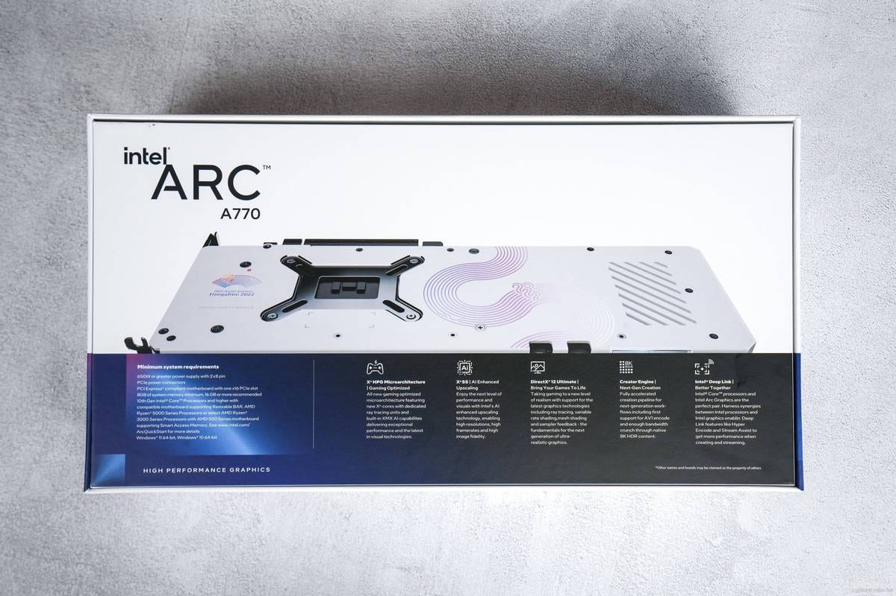

Intel Arc A770 16GB

Intel 重返独显市场的旗舰之作，32 个 Xe 核心配 16GB 大显存，首发 AV1 硬件编码与 XeSS 超采样，驱动不断打磨，是显卡市场中颇具性价比的第三极力量。
客观评测
Arc A770 16GB 拥有 32 个 Xe 核心与 560GB/s 显存带宽，理论规格不俗，光追性能可与同价位竞品一战，且是首款支持 AV1 硬件编码的消费级显卡。XeSS 超采样技术在支持的游戏中效果显著。实际表现受驱动影响较大：新 API 游戏表现良好，而依赖 DX9 转译的老游戏帧数不稳。待机功耗偏高是另一短板。整体而言它以显存容量与前瞻接口换取了独特的性价比定位。
主观点评
买 Arc A770，一半是买卡，一半是买“养成的乐趣”。刚上市时驱动粗糙、槽点不少，但 Intel 更新勤快，一两年下来体验判若两卡，这种被持续关照的感觉并不坏。16GB 显存和 AV1 编码对做视频的人尤其友好。它还不够成熟，偶尔的小毛病提醒你这是挑战者的第一枪；但正因为有了它，两家独大的市场才终于有了第三种声音。
优点与不足
- 16GB 显存同价位罕见，高材质游戏更从容
- AV1 硬件编码与 DP 2.0 接口规格超前
- 驱动持续优化，新游戏支持进步明显
- 老游戏与 DX9 兼容性依赖转译，表现波动较大
- 待机与低负载功耗偏高，能效一般
参数规格
| GPU 核心 | ACM-G10（Xe HPG），台积电 N6 |
|---|---|
| Xe 核心 | 32 个（4096 个 ALU） |
| 光追单元 | 32 个 |
| XMX 引擎 | 512 个，支持 XeSS 超采样 |
| 显存容量 | 16GB GDDR6 |
| 显存位宽 | 256-bit |
| 显存带宽 | 560GB/s |
| 核心频率 | 2100MHz |
| TDP | 225W |
| 供电接口 | 8-pin + 6-pin，建议 600W 电源 |
| 总线接口 | PCIe 4.0 ×16 |
| 视频输出 | 3×DP 2.0（UHBR10）+ 1×HDMI（依版本） |
| 特色技术 | XeSS 超采样、AV1 硬件编解码、Deep Link |
| 上市 | 2022 年 10 月 |